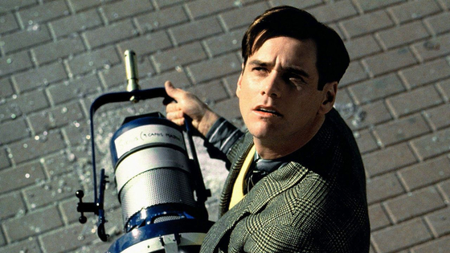

영화의 주인공 트루먼(짐캐리)는 '트루먼 쇼'라는 TV 버라이어티 쇼의 주인공이다. 하지만 그는 자신이 그 쇼의 주인공이라는 사실을 모른다. 그가 사는 도시 자체가 씨 헤이븐이라고 불리는 트루먼 쇼를 위한 커다란 세트장이다. 그의 세상은 모든 것이 가짜다. 매일마다 인사하는 앞 집 이웃들, 버스 기사, 직장 동료, 가장 친한 친구, 심지어는 그의 아내까지도 모두 쇼에서 연기를 하는 배우들이다. 아무것도 모르고 살아가던 중 비현실적인 사건들이 계속해서 벌어진다. 자신의 삶이 모두 가짜였다는 확신이 든 트루먼은 결국 바다를 통해 씨 헤이븐을 탈출하게 된다.